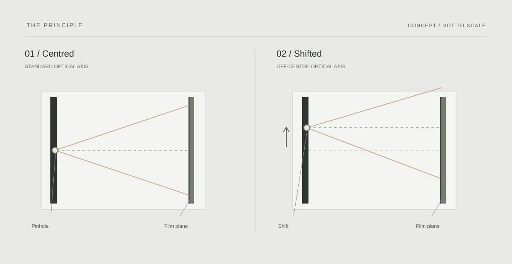

PiCa135
Can a pocket pinhole camera offer shift and several frame sizes?

A pocket camera with a shifting aperture, interchangeable image gates and two standard 135 cartridges. The pinhole moves while the body stays level; perforations provide a simple way to count film travel.
- Format
- 135 film
- Pinhole
- 0.2 mm recommended
- Design
- 2020
How it works
Shift
Move the pinhole upwards while keeping the film plane vertical. This raises the framing without tilting the camera.
Film advance
Two 135 cartridges protect take-up film. Steel-wire feelers register perforations as audible, tactile clicks.

Formats and assembly details
| Format | Clicks |
|---|---|
| 24 × 50 mm | 11 |
| 24 × 36 mm | 8 |
| 24 × 24 mm | 5 |
| 18 × 24 mm | 4 |
| 8.5 × 24 mm | 2 |
Click counts from Assembly Manual v1.0. The manual includes print settings, tolerances and the shutter mechanism.